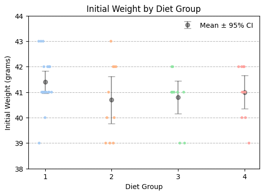
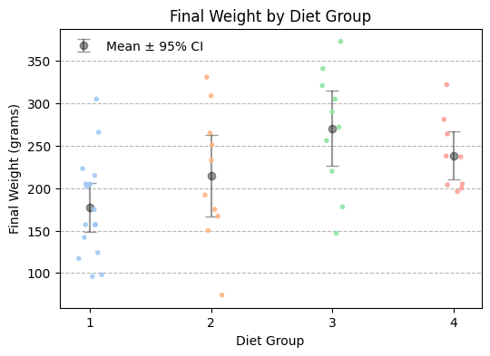
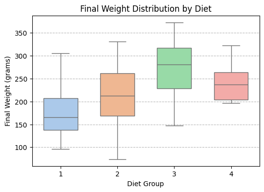
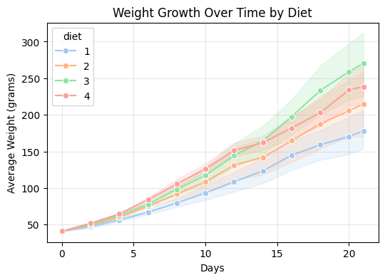
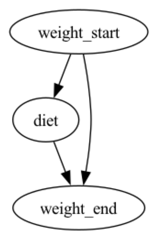
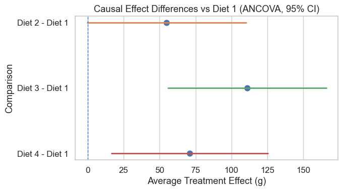
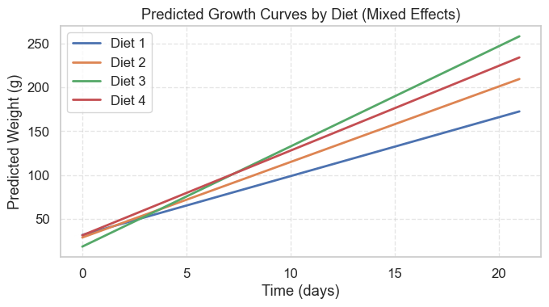

因果分析¶
日常生活中，我们想知道：运动能减肥吗？是不是运动一定能减肥，如果运动能减肥的话，哪种运动方式效果最好，是跑步、游泳还是瑜伽？
基本概念¶
在统计分析中，我们常常会问：
“吃这种饲料的小鸡是不是长得更快？”
这类问题不是单纯的“相关性”问题，而是“因果性”问题。
因果关系（Causality）指的是——当我们主动干预一个变量（例如改变饲料类型），会不会引起另一个变量（如体重）的变化。
概念 |
定义 |
示例 |
|---|---|---|
相关性（Correlation） |
两个变量一起变化，但不一定存在因果关系。 |
每天吃冰淇淋的人数与溺水人数高度相关，但这是因为夏天更热，而不是冰淇淋导致溺水。 |
因果性（Causation） |
变量 A 的变化直接引起变量 B 的变化。 |
改变饲料类型，会引起小鸡体重的改变。 |
核心思想：
因果分析要回答“如果我们改变 X，会不会导致 Y 改变？”
因果推断三要素¶
概念 |
在 ChickWeight 中的对应 |
作用 |
|---|---|---|
Treatment（处理） |
饲料种类（Diet） |
我们要干预的变量 |
Outcome（结果） |
最终体重（Weight） |
饲料影响的结果 |
Control（协变量） |
初始体重（weight_start） |
控制潜在混杂 |
基本分析步骤¶
步骤 |
名称 |
主要任务 |
说明 |
|---|---|---|---|
1. 提出研究问题 |
明确因果假设 |
明确要回答的“干预效应”问题，即如果改变某个因素 X，会不会导致结果 Y 的变化。 |
例如：改变饲料类型是否会导致小鸡体重增加？ |
2. 构建因果模型 |
绘制因果图（DAG）或建立理论框架 |
根据领域知识，明确潜在的因果路径与混杂变量。 |
使用有向无环图（DAG）或结构方程表示因果结构。 |
3. 确定识别策略 |
判断能否识别因果效应 |
检查是否满足“可识别性假设”，如：随机化、可忽略性（Ignorability）、稳定单元处理值假设（SUTVA）等。 |
若无法随机化，则需采用控制、匹配、加权等方法。 |
4. 选择估计方法 |
选择合适的统计模型或算法 |
根据数据类型与研究目的，选择估计因果效应的技术方法。 |
例如：OLS、IPTW、Matching、AIPW、Regression Discontinuity、IV、Difference-in-Differences 等。 |
5. 执行估计与计算 |
实际建模并计算 ATE 或 ATT |
在控制混杂变量后，计算处理组与对照组的平均因果效应。 |
通过模型输出、置信区间与显著性水平判断结果可靠性。 |
6. 验证假设与稳健性分析 |
检查模型假设是否成立 |
检验共线性、平衡性（balance）、倾向得分分布、异方差等问题。 |
可使用敏感性分析（sensitivity analysis）或替代模型进行对比。 |
7. 解释与可视化结果 |
解释因果效应并报告结论 |
将数值结果转化为因果意义的解释，展示图表（如效应图、DAG、权重分布）。 |
强调“因果解释”而非仅统计显著性。 |
经典案例¶
实验设计¶
设计一个随机对照实验（Randomized Controlled Trial）。
将 50 只小鸡随机分配到 4 种不同饲料类型（Diet 1–4）。
所有小鸡都在相似的环境、温度、饲养条件下成长。
唯一的差异变量是 饲料类型（Diet）。
记录每只小鸡从出生到第 21 天的多次体重。
分组情况
饮食类型 (Diet) |
小鸡数量 (Chick count) |
|---|---|
1 |
18 只 |
2 |
10 只 |
3 |
10 只 |
4 |
12 只 |
合计 |
50 只 |
变量
变量名 |
含义 |
类型 |
|---|---|---|
weight |
小鸡的体重（克） |
连续变量 |
time |
实验天数（0–21） |
数值型 |
chick |
小鸡编号（1–50） |
分组变量 |
diet |
饲料类型（1–4） |
类别变量 |
饲料类型（Diet）是“因”（Treatment），体重（Weight）是“果”（Outcome），其他条件保持不变（Control），满足因果推断的“反事实框架”。
数据分析¶
小鸡的起始重量¶
了解一下小鸡的起始重量
import pandas as pd
import matplotlib.pyplot as plt
import seaborn as sns
import numpy as np
# 读取数据
df = pd.read_csv("chickweight.csv")
df.columns = [c.strip().lower() for c in df.columns]
w0 = df[df["time"] == 0]
# 计算均值和95%置信区间
grouped = w0.groupby("diet")["weight"]
means = grouped.mean()
stds = grouped.std()
ns = grouped.count()
cis = 1.96 * stds / np.sqrt(ns)
# 绘图
plt.figure(figsize=(6,4))
# 先画条带图（每只小鸡的初始体重）
sns.stripplot(
data=w0,
x="diet", y="weight",
palette="pastel",
hue="diet",
alpha=0.9,
jitter=True,
size=4,
legend=False
)
# 再叠加均值 ± 95% CI
plt.errorbar(
means.index - 1, # 因为 x 轴是分组编号 1~4，matplotlib 默认从 0 开始，需要减1
means,
yerr=cis,
fmt='o',
color='black',
ecolor='black',
elinewidth=1.5,
capsize=5,
markersize=6,
label='Mean ± 95% CI',
alpha=0.4,
)
# 图形样式
plt.title("Initial Weight by Diet Group")
plt.xlabel("Diet Group")
plt.ylabel("Initial Weight (grams)")
plt.ylim(38, 44)
plt.legend(frameon=False)
plt.grid(axis='y', linestyle='--', alpha=0.9)
plt.show()
# 输出为表格
summary = pd.DataFrame({
"Mean": means.round(3),
"Std": stds.round(3),
"N": ns,
"95% CI": cis.round(3)
})
print(summary)
# =============================
# 方差分析（ANOVA）
# =============================
groups = [w0.loc[w0["diet"] == i, "weight"] for i in sorted(w0["diet"].unique())]
f_stat, p_value = f_oneway(*groups)
print("=== 单因素方差分析（ANOVA） ===")
print(f"F 统计量: {f_stat:.3f}")
print(f"p 值: {p_value:.5f}")
if p_value < 0.05:
print("→ 结论：不同饲料组的初始体重存在显著差异。")
else:
print("→ 结论：不同饲料组的初始体重无显著差异（分组较平衡）。")
print()

数据的描述性分析
Mean Std N 95% CI
diet
1 41.4 0.995 20 0.436
2 40.7 1.494 10 0.926
3 40.8 1.033 10 0.640
4 41.0 1.054 10 0.653
四组的组间差异很小：四组平均体重都在 40.7–41.4 g 之间，说明实验开始时各组小鸡的初始体重非常接近。
标准差反应组内一致性：饲料1组标准差最小（0.995），说明这组小鸡初始体重最均匀；饲料2组标准差最大（1.494），个体差异稍大。
95%置信区间：饲料1组的平均体重 41.4 ± 0.436，意味着有95%的信心认为该组总体平均体重在[40.964, 41.836] 克之间，类似地，饲料2组为 [39.774, 41.626]。
=== 单因素方差分析（ANOVA） ===
F 统计量: 1.132
p 值: 0.34591
标 |
含义 |
解读 |
|---|---|---|
F统计量 (F-statistic) |
衡量组间方差与组内方差的比值。值越大，组间差异越明显。 |
这里 F=1.132，说明组间差异与组内差异相比并不大。 |
p值 (p-value) |
代表「组间平均值差异是否显著」。当 p < 0.05 时，认为至少有一组与其他组显著不同。 |
这里 p=0.34591 > 0.05，说明统计上没有显著差异。 |
结论
四组小鸡在实验开始时体重差异不显著（均值几乎重叠，置信区间重叠明显），因此，可以认为 实验起点是平衡的，适合后续比较不同饲料对生长速度或最终体重的影响。实验起点公平，后续体重差异可归因于饲料效果，而非起始体重不同。
实验后的小鸡重量¶
实验后的描述性分析¶
import pandas as pd
import matplotlib.pyplot as plt
import seaborn as sns
import numpy as np
from scipy.stats import f_oneway
from statsmodels.stats.multicomp import pairwise_tukeyhsd
# 读取数据
df = pd.read_csv("chickweight.csv")
df.columns = [c.strip().lower() for c in df.columns]
# 选取实验结束时（最后一天）的小鸡体重
w_final = df[df["time"] == df["time"].max()]
# 计算均值和95%置信区间
grouped = w_final.groupby("diet")["weight"]
means = grouped.mean()
stds = grouped.std()
ns = grouped.count()
cis = 1.96 * stds / np.sqrt(ns)
# =============================
# 图1：条带图 + 平均值 ±95% CI
# =============================
plt.figure(figsize=(6,4))
sns.stripplot(
data=w_final,
x="diet", y="weight",
palette="pastel",
hue="diet",
alpha=0.9,
jitter=True,
size=4,
legend=False
)
plt.errorbar(
means.index - 1,
means,
yerr=cis,
fmt='o',
color='black',
ecolor='black',
elinewidth=1.5,
capsize=5,
markersize=6,
label='Mean ± 95% CI',
alpha=0.4,
)
plt.title("Final Weight by Diet Group")
plt.xlabel("Diet Group")
plt.ylabel("Final Weight (grams)")
plt.legend(frameon=False)
plt.grid(axis='y', linestyle='--', alpha=0.9)
plt.show()
# =============================
# 图2：箱线图 + 条带图叠加
# =============================
plt.figure(figsize=(6,4))
sns.boxplot(
data=w_final,
x="diet", y="weight",
palette="pastel",
hue="diet",
width=0.6,
legend=False
)
plt.title("Final Weight Distribution by Diet (Boxplot)")
plt.xlabel("Diet Group")
plt.ylabel("Final Weight (grams)")
plt.grid(axis='y', linestyle='--', alpha=0.9)
plt.show()
# =============================
# 输出表格
# =============================
summary = pd.DataFrame({
"Mean": means.round(3),
"Std": stds.round(3),
"N": ns,
"95% CI": cis.round(3)
})
print("=== 描述性统计：实验结束时体重 ===")
print(summary)
print()
# =============================
# 方差分析（ANOVA）
# =============================
groups = [w_final.loc[w_final["diet"] == i, "weight"] for i in sorted(w_final["diet"].unique())]
f_stat, p_value = f_oneway(*groups)
print("=== 单因素方差分析（ANOVA） ===")
print(f"F 统计量: {f_stat:.3f}")
print(f"p 值: {p_value:.5f}")
if p_value < 0.05:
print("→ 结论：不同饲料组的最终体重存在显著差异。")
else:
print("→ 结论：不同饲料组的最终体重无显著差异。")
print()


=== 描述性统计：实验结束时体重 ===
Mean Std N 95% CI
diet
1 177.750 58.702 16 28.764
2 214.700 78.138 10 48.431
3 270.300 71.623 10 44.392
4 238.556 43.348 9 28.321
结果解读
饲料组 |
平均体重 (g) |
标准差 |
样本量 |
95% CI |
说明 |
|---|---|---|---|---|---|
Diet 1 |
177.8 |
58.7 |
16 |
±28.8 |
体重最低，且个体差异较大，说明该饲料增重效果最弱。 |
Diet 2 |
214.7 |
78.1 |
10 |
±48.4 |
平均体重略高于 1 组，但波动很大，效果不稳定。 |
Diet 3 |
270.3 |
71.6 |
10 |
±44.4 |
平均体重最高，说明此饲料促进生长最显著。 |
Diet 4 |
238.6 |
43.3 |
9 |
±28.3 |
体重较高且标准差较小，说明该饲料效果较好且稳定。 |
意义
饲料种类影响显著
平均体重从 ~178 g 到 ~270 g 变化，差距接近 100 g。说明不同饲料对生长的促进作用明显不同。
Diet 3 最优
该组平均体重最高，说明其营养配比最有利于小鸡的体重增长。
Diet 1 最弱
平均体重最低，且组内差异大，可能饲料营养不足或个体反应不一致。
Diet 4 稳定性好
标准差最小，说明这组小鸡体重分布集中、生长一致。
置信区间解读
例如 Diet 3 的 95% CI 为 ±44.4 ，意味着我们有 95% 的信心认为该组总体平均体重位于 270.3 ± 44.4 g 之间（约 226 – 315 g）。
过程增重的描述¶
import pandas as pd
import matplotlib.pyplot as plt
import seaborn as sns
import numpy as np
# 读取数据
df = pd.read_csv("chickweight.csv")
df.columns = [c.strip().lower() for c in df.columns]
# =============================
# 可视化：各饲料组随时间体重变化
# =============================
plt.figure(figsize=(6,4))
sns.lineplot(
data=df,
x="time", y="weight",
hue="diet",
errorbar=('ci', 95), # 显示均值 ±95% CI
palette="pastel",
marker="o"
)
plt.title("Weight Growth Over Time by Diet")
plt.xlabel("Days")
plt.ylabel("Average Weight (grams)")
plt.grid(alpha=0.3)
plt.show()
# =============================
# 计算每个时间点的描述性统计
# =============================
summary = (
df.groupby(["time", "diet"])["weight"]
.agg(Mean="mean", Std="std", N="count")
.assign(CI=lambda s: 1.96 * s["Std"] / np.sqrt(s["N"]))
.round(2)
)
print("=== 各时间点各饲料组体重描述统计 ===")
print(summary.reset_index().head(20)) # 仅显示前20行以便查看结构
# =============================
# 计算平均增重趋势（首尾差）
# =============================
first = df[df["time"] == df["time"].min()].groupby("diet")["weight"].mean()
last = df[df["time"] == df["time"].max()].groupby("diet")["weight"].mean()
gain = (last - first).round(2)
print("\n=== 实验期间平均增重（最终均值 - 初始均值） ===")
print(gain)
# =============================
# 简要解释
# =============================
print("\n=== 结果解读 ===")
for diet, g in gain.items():
print(f"Diet {diet}: 平均增重 {g} 克。")
print("从结果可见，不同饲料组的体重增长速度不同，其中增重最多的组在曲线中上升最陡（通常为 Diet 3）。")

各时间点各饲料组体重描述统计
time diet Mean Std N CI
0 0 1 41.40 0.99 20 0.44
1 0 2 40.70 1.49 10 0.93
2 0 3 40.80 1.03 10 0.64
3 0 4 41.00 1.05 10 0.65
4 2 1 47.25 4.28 20 1.87
5 2 2 49.40 2.88 10 1.78
6 2 3 50.40 2.41 10 1.50
7 2 4 51.80 1.93 10 1.20
8 4 1 56.47 4.13 19 1.86
9 4 2 59.80 2.30 10 1.43
10 4 3 62.20 2.78 10 1.72
11 4 4 64.50 2.55 10 1.58
12 6 1 66.79 7.76 19 3.49
13 6 2 75.40 4.17 10 2.58
14 6 3 77.90 5.70 10 3.54
15 6 4 83.90 5.07 10 3.14
16 8 1 79.68 13.78 19 6.19
17 8 2 91.70 14.80 10 9.17
18 8 3 98.40 12.35 10 7.65
19 8 4 105.60 9.34 10 5.79
实验期间平均增重（最终均值 - 初始均值）
Diet 1: 平均增重 136.35 克。
Diet 2: 平均增重 174.0 克。
Diet 3: 平均增重 229.5 克。
Diet 4: 平均增重 197.56 克。
从结果可见，不同饲料组的体重增长速度不同，其中增重最多的组在曲线中上升最陡（通常为 Diet 3）。
相关与因果¶
我们已经通过描述性统计或 ANOVA 知道 Diet 3 的小鸡体重最高，但是我们仍然不能直接说：Diet 3 导致了小鸡长得最快。
最后的统计数据表明，Diet3 组的平均体重最高，这只是观测到的相关现象，但我们还不知道，这是由于饲料导致的，还是别的因素（如小鸡原来更健康，样本数量不同等等）。
因果分析要回答的是“如果我改变饲料，会不会导致体重变化？”，也就是所谓的 反事实问题（counterfactual）：
如果原来吃 Diet 1 的那只小鸡改吃 Diet 3， 它的体重是否真的会比现在更高？
这个问题不能靠平均数直接回答，因为它涉及假设世界（what-if world）。
类比 |
解释 |
|---|---|
你发现“带伞的人更多的时候街上更湿” |
描述性统计：伞与湿度相关 |
但并不是“带伞导致下雨” |
因果分析：要判断是“下雨导致带伞” |
同理，“Diet 3 小鸡更重” ≠ “Diet 3 导致更重”，还可能是 Diet 3 组原本的小鸡体质更好。
因果分析的目标¶
在控制其他因素后，判断“饲料种类”是否是导致体重差异的真正原因。
因果分析¶
import pandas as pd
from dowhy import CausalModel
# 读取数据
df = pd.read_csv("chickweight.csv")
df.columns = [c.strip().lower() for c in df.columns]
# 提取实验开始（初始体重）与结束（最终体重）的数据
start = df[df["time"] == 0][["chick", "diet", "weight"]].rename(columns={"weight": "weight_start"})
end = df[df["time"] == df["time"].max()][["chick", "diet", "weight"]].rename(columns={"weight": "weight_end"})
# 合并前后体重
data = pd.merge(start, end, on=["chick", "diet"], how="inner")
data["gain"] = data["weight_end"] - data["weight_start"]
# ----------------------------
# 1. 定义因果模型
# ----------------------------
model = CausalModel(
data=data,
treatment="diet", # 饲料类型
outcome="weight_end", # 最终体重
common_causes=["weight_start"] # 初始体重作为混杂变量
)
# 可视化因果图（可选）
model.view_model()
# ----------------------------
# 2. 识别因果效应
# ----------------------------
identified_estimand = model.identify_effect(proceed_when_unidentifiable=True)
print(identified_estimand)
# ----------------------------
# 3. 估计因果效应（使用线性回归）
# ----------------------------
estimate = model.estimate_effect(
identified_estimand,
method_name="backdoor.linear_regression"
)
print("因果效应估计值（平均效应 ATE）:")
print(estimate)
# ----------------------------
# 4. 随机化安慰检验（可选，检验稳健性）
# ----------------------------
refutation = model.refute_estimate(
identified_estimand, estimate, method_name="placebo_treatment_refuter"
)
print(refutation)
运行后输出的图：

结果解读：
weight_start → diet → weight_end
↘──────────────↗
各节点含义：
节点 |
含义 |
|---|---|
weight_start |
小鸡的初始体重（实验前） |
diet |
饲料类型（实验处理变量） |
weight_end |
小鸡的最终体重（实验结果变量） |
各箭头含义：
箭头 |
含义 |
|---|---|
weight_start → diet |
初始体重可能影响小鸡被分配到不同饲料组（潜在混杂关系） |
weight_start → weight_end |
初始体重越大，小鸡可能最终体重也越大 |
diet → weight_end |
饲料类型影响最终体重（我们要估计的因果效应） |
DAG 的作用：告诉我们“需要控制谁”。 在 ChickWeight 中，weight_start 是混杂变量，必须在模型中控制，否则会高估 Diet 效果。
Estimand type: EstimandType.NONPARAMETRIC_ATE
### Estimand : 1
Estimand name: backdoor
Estimand expression:
d
───────(E[weight_end|weight_start])
d[diet]
Estimand assumption 1, Unconfoundedness: If U→{diet} and U→weight_end then P(weight_end|diet,weight_start,U) = P(weight_end|diet,weight_start)
### Estimand : 2
Estimand name: iv
No such variable(s) found!
### Estimand : 3
Estimand name: frontdoor
No such variable(s) found!
### Estimand : 4
Estimand name: general_adjustment
Estimand expression:
d
───────(E[weight_end|weight_start])
d[diet]
Estimand assumption 1, Unconfoundedness: If U→{diet} and U→weight_end then P(weight_end|diet,weight_start,U) = P(weight_end|diet,weight_start)
因果效应估计值（平均效应 ATE）:
*** Causal Estimate ***
## Identified estimand
Estimand type: EstimandType.NONPARAMETRIC_ATE
### Estimand : 1
Estimand name: backdoor
Estimand expression:
d
───────(E[weight_end|weight_start])
d[diet]
Estimand assumption 1, Unconfoundedness: If U→{diet} and U→weight_end then P(weight_end|diet,weight_start,U) = P(weight_end|diet,weight_start)
## Realized estimand
b: weight_end~diet+weight_start
Target units: ate
## Estimate
Mean value: 22.838360745962177
结论¶
当我们控制初始体重 (weight_start) 后，饲料 (diet) 对最终体重 (weight_end) 的平均因果效应（ATE）约为 22.84 克，也就是说——在平均意义上，更换饲料会导致小鸡最终体重增加约 23 克。
ATE 表示：
“如果我们随机地把所有小鸡从原本的饲料换成某个目标饲料（这里是 Diet 3）， 那么平均而言，小鸡的最终体重会增加（或减少）多少克。”
也就是说：
“Treatment（处理）”是饲料类型 Diet。
“Effect（效应）”是最终体重 weight_end 的变化。
“Average” 表示对所有小鸡取平均效果。
为什么叫“平均”因果效应 • 并不是每只小鸡都增加 22.8 g； • 有的小鸡可能增重 30 g，有的只 10 g； • 22.8 g 是总体平均效应。
能否“确定”Diet影响小鸡体重？
因果分析（DoWhy + 反事实）
你控制了初始体重 (weight_start)，排除了“原本体重大 → 吃特定饲料 → 更重”的混杂影响。
在控制后，模型估计的平均因果效应（ATE） ≈ +22 克。 即在同等初始体重条件下，改变饲料类型平均能使小鸡体重增加约 22 克。
反事实模拟（如果全体都改喂 Diet 3）显示整体体重分布右移。 这提供了“饲料 → 体重”因果影响的证据。
潜在问题 |
说明 |
|---|---|
分组是否真正随机 |
如果实验设计中饲料分配并非完全随机，仍可能有未控制混杂因素（如鸡的品种、性别、健康状况）。 |
样本量较小 |
每组 9–16 只，估计的置信区间较宽，效应大小存在不确定性。 |
模型假设线性 |
我们假设 weight_end 与 diet、weight_start 呈线性关系，但真实生长曲线可能非线性。 |
如何描述这个结论？
方差分析显示，不同饲料组的最终体重存在显著差异（p < 0.05）。
进一步的因果分析控制初始体重后，估计饲料对最终体重的平均因果效应为 22.8 克。
反事实模拟表明，若所有个体改喂 Diet 3，整体体重分布将明显右移。
因此，在本实验条件下，饲料类型可被视为影响小鸡体重的重要因素。
因果效应差异¶
当我们问：
“跑步、游泳、瑜伽，哪种运动减肥效果最好？”
我们其实在问：不同treatment之间的因果效应是否有差异？
定义上：
因果效应（causal effect） = 处理组与对照组的结果之差；
因果效应差异（treatment effect heterogeneity）= 不同处理之间的效应差。
如果我们想回答哪种Diet的增重效果最好，可以计算因果效应差异。
代码¶
# -*- coding: utf-8 -*-
# ChickWeight：多处理因果效应分析（ANCOVA）+ Seaborn 可视化（森林图）
# 说明：
# 1) 以“最终日体重”为结果（weight_final），以“基线体重”为协变量（weight0），Diet 为多处理
# 2) 用 ANCOVA 估计相对于 Diet 1 的平均因果效应（ATE）及 95% CI、p 值
# 3) 使用 Seaborn 绘制“因果效应差异森林图”（ATE ± 95% CI）
# 4) 可选：拟合混合效应模型（全时序），绘制各 Diet 的预测生长曲线（matplotlib）
import pandas as pd
import numpy as np
import matplotlib.pyplot as plt
import seaborn as sns
import statsmodels.api as sm
from statsmodels.formula.api import ols, mixedlm
# ---------------------------
# 0) 读取数据
# ---------------------------
# 若你的文件不在当前目录，请修改文件名为实际路径
df = pd.read_csv("chickweight.csv")
# ---------------------------
# 1) 构造面板：基线体重、最终体重与增量
# ---------------------------
baseline = df[df["time"] == 0][["chick", "weight"]].rename(columns={"weight": "weight0"})
final_idx = df.groupby("chick")["time"].idxmax()
final_df = df.loc[final_idx, ["chick", "diet", "weight", "time"]].rename(
columns={"weight": "weight_final", "time": "time_final"}
)
panel = final_df.merge(baseline, on="chick", how="left")
panel["gain"] = panel["weight_final"] - panel["weight0"]
panel["diet"] = panel["diet"].astype(int)
# ---------------------------
# 2) 描述性统计（可选）
# ---------------------------
desc = panel.groupby("diet").agg(
n=("chick", "count"),
baseline_mean=("weight0", "mean"),
final_mean=("weight_final", "mean"),
gain_mean=("gain", "mean"),
final_std=("weight_final", "std"),
gain_std=("gain", "std"),
).round(2)
print("\n[Descriptives] ChickWeight by Diet")
print(desc)
# ---------------------------
# 3) 因果分析：ANCOVA（weight_final ~ C(diet) + weight0）
# Diet 1 为基类，C(diet)[T.k] 系数 ≈ ATE(k,1)
# ---------------------------
ancova = ols("weight_final ~ C(diet) + weight0", data=panel).fit()
print("\n[ANCOVA Summary]\n")
print(ancova.summary())
# 3.1 在平均基线体重处，各 diet 的调整后均值与 95% CI
w0_bar = panel["weight0"].mean()
adj_means, adj_ci = {}, {}
for d in sorted(panel["diet"].unique()):
X = {"Intercept": 1.0, "weight0": w0_bar}
for k in sorted(panel["diet"].unique()):
if k == 1:
continue
key = f"C(diet)[T.{k}]"
X[key] = 1.0 if d == k else 0.0
x_vec = pd.Series({k: X.get(k, 0.0) for k in ancova.params.index})
mu = float(np.dot(x_vec.values, ancova.params.values))
V = ancova.cov_params().values
se = float(np.sqrt(np.dot(x_vec.values, np.dot(V, x_vec.values))))
z = 1.96
adj_means[d] = mu
adj_ci[d] = (mu - z * se, mu + z * se)
adj_df = pd.DataFrame({
"diet": sorted(adj_means.keys()),
"adj_mean": [adj_means[d] for d in sorted(adj_means.keys())],
"ci_low": [adj_ci[d][0] for d in sorted(adj_ci.keys())],
"ci_high": [adj_ci[d][1] for d in sorted(adj_ci.keys())],
}).set_index("diet").round(2)
print("\n[Adjusted Means at mean(baseline)] Final Weight by Diet (95% CI)")
print(adj_df)
# 3.2 相对 Diet 1 的两两因果效应差异（ATE 与 95% CI、p 值）
pairwise = []
for d in sorted(panel["diet"].unique()):
if d == 1:
continue
key = f"C(diet)[T.{d}]"
est = ancova.params[key]
ci_low, ci_high = ancova.conf_int().loc[key]
p = ancova.pvalues[key]
pairwise.append({
"Comparison": f"Diet {d} - Diet 1",
"ATE_est": est,
"CI_low": ci_low,
"CI_high": ci_high,
"pvalue": p
})
ate_df = pd.DataFrame(pairwise).round(3)
print("\n[Pairwise causal effect differences (ATE vs Diet 1)]")
print(ate_df)
# ---------------------------
# 4) Seaborn：因果效应差异“森林图”
# ---------------------------
# 误差条宽度（用于绘制 95% CI）
ate_df["err_low"] = ate_df["ATE_est"] - ate_df["CI_low"]
ate_df["err_high"] = ate_df["CI_high"] - ate_df["ATE_est"]
sns.set(style="whitegrid", font_scale=1.1)
plt.figure(figsize=(7, 4))
# 点图（估计值）
ax = sns.pointplot(
data=ate_df,
x="ATE_est", y="Comparison",
join=False
)
# 水平误差条（95% CI）
for i, row in ate_df.iterrows():
plt.plot([row["CI_low"], row["CI_high"]], [i, i], linewidth=2)
# 参考线 x=0
plt.axvline(0, linestyle="--", linewidth=1)
plt.title("Causal Effect Differences vs Diet 1 (ANCOVA, 95% CI)")
plt.xlabel("Average Treatment Effect (g)")
plt.ylabel("Comparison")
plt.tight_layout()
plt.show()
# ---------------------------
# 5) （可选）混合效应模型：全时序生长曲线
# weight ~ time * C(diet) + (1 | chick)
# ---------------------------
df_me = df.copy()
df_me["diet"] = df_me["diet"].astype("category")
mix = mixedlm("weight ~ time * C(diet)", data=df_me, groups=df_me["chick"]).fit(reml=True)
print("\n[Mixed Effects: fixed effects]\n")
print(mix.summary())
# 预测各 diet 的生长曲线（固定效应）
time_grid = np.linspace(df["time"].min(), df["time"].max(), 12)
pred_rows = []
for d in sorted(df_me["diet"].cat.categories.astype(int)):
for t in time_grid:
Xrow = pd.DataFrame({"time": [t], "diet": pd.Categorical([d], categories=df_me["diet"].cat.categories)})
yhat = float(mix.predict(Xrow))
pred_rows.append({"diet": int(d), "time": t, "pred_weight": yhat})
pred_df = pd.DataFrame(pred_rows)
plt.figure(figsize=(7, 4))
for d in sorted(pred_df["diet"].unique()):
sub = pred_df[pred_df["diet"] == d]
plt.plot(sub["time"], sub["pred_weight"], label=f"Diet {d}", linewidth=2)
plt.title("Predicted Growth Curves by Diet (Mixed Effects)")
plt.xlabel("Time (days)")
plt.ylabel("Predicted Weight (g)")
plt.legend()
plt.grid(True, linestyle="--", alpha=0.5)
plt.tight_layout()
plt.show()
# ---------------------------
# 6) 可选：保存模型摘要到当前目录
# ---------------------------
with open("ancova_summary.txt", "w", encoding="utf-8") as f:
f.write(ancova.summary().as_text())
with open("mixedlm_summary.txt", "w", encoding="utf-8") as f:
f.write(mix.summary().as_text())
print("\nSaved: ancova_summary.txt, mixedlm_summary.txt")
[Descriptives] ChickWeight by Diet
n baseline_mean final_mean gain_mean final_std gain_std
diet
1 20 41.4 156.3 114.9 69.96 69.78
2 10 40.7 214.7 174.0 78.14 78.99
3 10 40.8 270.3 229.5 71.62 71.11
4 10 41.0 229.3 188.3 50.27 50.91
[ANCOVA Summary]
OLS Regression Results
==============================================================================
Dep. Variable: weight_final R-squared: 0.313
Model: OLS Adj. R-squared: 0.252
Method: Least Squares F-statistic: 5.135
Date: Fri, 31 Oct 2025 Prob (F-statistic): 0.00171
Time: 20:13:59 Log-Likelihood: -280.16
No. Observations: 50 AIC: 570.3
Df Residuals: 45 BIC: 579.9
Df Model: 4
Covariance Type: nonrobust
================================================================================
coef std err t P>|t| [0.025 0.975]
--------------------------------------------------------------------------------
...
Comparison ATE_est CI_low CI_high pvalue
0 Diet 2 - Diet 1 54.945 -0.515 110.406 0.052
1 Diet 3 - Diet 1 111.039 55.969 166.109 0.000
2 Diet 4 - Diet 1 71.026 16.562 125.490 0.012

森林图的结构
横轴（X 轴）：Average Treatment Effect (g)，表示相对于 Diet 1 的平均体重差异。
越往右 → 最终体重越高（比 Diet 1 更有效）。
虚线 x = 0 → “无差异”基线。
若置信区间（水平线）跨过 0 → 差异不显著。
纵轴（Y 轴）：三种比较
Diet 2 – Diet 1
Diet 3 – Diet 1
Diet 4 – Diet 1
圆点：估计的 ATE 值。
水平线段：95 % 置信区间（CI）。 表示在统计上我们有 95 % 的把握，真实效应位于这条线的范围内。
比较 |
ATE (中点) |
CI 范围 |
结论 |
|---|---|---|---|
Diet 2 – Diet 1 |
约 +55 g |
−0.5 ～ 110 g |
差异“边缘显著”；可能略优于 Diet 1，但也可能无差异（CI 几乎触 0） |
Diet 3 – Diet 1 |
约 +111 g |
56 ～ 166 g |
明显优于 Diet 1；置信区间完全在 0 右侧，且距离远，说明显著提升体重 |
Diet 4 – Diet 1 |
约 +71 g |
17 ～ 125 g |
也显著优于 Diet 1 （CI 不跨 0） |
结论：
Diet 3 效果最强：平均比 Diet 1 重 约 110 克，差异高度显著。
Diet 4 次之：平均 +70 克，也有显著提升。
Diet 2 轻微优于 Diet 1，但置信区间几乎包含 0，统计上只是接近显著。
所有线段都在 0 右侧 → 饮食方案总体上都能增加体重，只是效果强弱不同。
[Mixed Effects: fixed effects]
Mixed Linear Model Regression Results
==============================================================
Model: MixedLM Dependent Variable: weight
No. Observations: 578 Method: REML
No. Groups: 50 Scale: 643.3133
Min. group size: 2 Log-Likelihood: -2733.4523
Max. group size: 12 Converged: Yes
Mean group size: 11.6
--------------------------------------------------------------
Coef. Std.Err. z P>|z| [0.025 0.975]
--------------------------------------------------------------
Intercept 31.514 6.116 5.153 0.000 19.527 43.502
C(diet)[T.2] -2.881 10.547 -0.273 0.785 -23.553 17.792
C(diet)[T.3] -13.264 10.547 -1.258 0.209 -33.937 7.409
C(diet)[T.4] -0.402 10.556 -0.038 0.970 -21.091 20.288
time 6.711 0.258 25.972 0.000 6.205 7.218
time:C(diet)[T.2] 1.898 0.428 4.429 0.000 1.058 2.737
time:C(diet)[T.3] 4.711 0.428 10.997 0.000 3.872 5.551
time:C(diet)[T.4] 2.951 0.434 6.799 0.000 2.100 3.801
Group Var 545.659 5.149
==============================================================

图类型 |
数据来源 |
含义 |
|---|---|---|
平均生长曲线图 |
实际观测均值（平均线+置信带） |
原始实验数据的趋势，可见真实波动 |
混合效应模型预测图 |
模型拟合值（固定效应预测） |
理论平均趋势，平滑、去噪后反映“真实效应” |